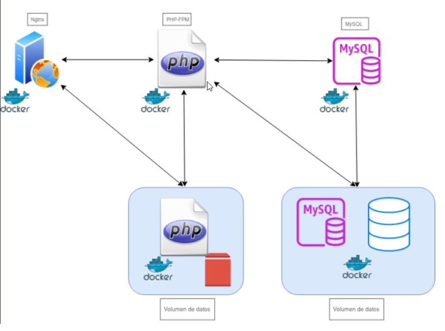

Práctica 6.2 - Despliegue de una aplicación PHP con Nginx y MySQL usando Docker y Docker-Compose
Para comenzar, la ip usada fue 192.168.91.192.
Estructura de directorios
Para comenzar, se ha creado una estructura de directorios como la siguiente:
que queda de la siguiente forma:

Creación del contenedor de Nginx
Para comenzar, modificamos el docker-compose.yml:
Correremos el contenedor y comprobaremos que funciona correctamente:

Si funciona correctamente, veremos la siguiente página:
Creación del contenedor de PHP
Creamos el index.php:

Ahora debemos de modificar la configuración de Nginx para que pueda ejecutar PHP:
y por último modificamos el Dockerfile de Nginx:
Modificamos el docker-compose.yml:
Ahora levantamos los contenedores y comprobamos que funciona correctamente:
Comprobamos que funciona correctamente:

Creación del contenedor MySQL
Modificamos el Dockerfile de php:

Modificamos el docker-compose.yml:

Modificamos el index.php:
Se levantan los contenedores y comprobamos que funciona correctamente:
y comprobamos los contenedores:

Conexión a la base de datos
Accedemos a la página y comprobamos que funciona correctamente:
Ahora para comprobar que se ha conectado correctamente a la base de datos, modificamos el index.php con un nuevo usuario, dejando el index así:
y comprobamos que funciona correctamente:
Esquema de la aplicación
